Two squadrons: round 6
Everything still open, in one place, after your answers and three readers' red teams (Astra, Opus, then Fable at your call; every claim checked against your rulings and the app). Grouped by topic. Each line has my recommendation; answer with its number, e.g. "F15 yes, Q1 other choice". Pictures are the real app from earlier rounds, shown for the place they are about; round 7 draws the new parts.
First: three corrections to what I told you
- X1I said the four sign-off names on Close's amendments could be the last issue's, "always names the boxes offer". False: a signer who has lost his Scheduler tick no longer counts, and the app refuses to publish. Replaced by F18.
- X2I said the 6 are "back on 149's schedule today" with "their DET ends today". Those contradict: an input's last day still counts him away. Replaced by F15.
- X3I used Viper as one of 149's six and as a 142 man. On this page the six are 149's Hawk, Spur, Talc, Vane, Crisp and Moss; Viper is 142's.
Closing a detachment
- F15The closing day. Rec: stays the detachment's; the 6 are home from the next day.
- F16What Close clears, and in what order. Rec: every row; publish; then end their DET.
- F17The card names everything the press touches. Rec: yes, each line only when it applies.
- F18Names on Close's amendments. Rec: none; one line "Cleared when Exercise North was closed".
- C2149's home days that go pending. Rec: left for 149's scheduler to plan and publish, named on the card.
- C8Days on different amendments. Rec: the card names no label; past 3 days, a range.
- Q2A past detachment day found wrong later. Rec: it can still take a correcting amendment.
- F24Undo of Close. Rec: not on the Undo button; "Keep open" is the safety.
Planning each other's people
- F19149 picks a 142 man onto 142's published day (Q3). Rec: the row shows with 149's badge, never pending on 142's day.
- F20The man picked is told. Rec: his bell, and he sees the line he is on.
- Q4149 puts a 142 man in 149's own line: may 142 edit that line? Rec: no.
- Q6Does that borrowing count him out on the Leave War? Rec: no.
- F8142 changes its line in 149's wave after both published. Rec: a fourth sentence, and 149 told.
- R9Two schedulers on one shared line, no lock. Rec: the "editing" mark shown across both; the later save stands; a warning on Publish.
Access and roles
- Q5A 142 man given 149 "as a scheduler". Rec: two grants, "Scheduler of 149" (its schedule pages only) and "Admin of 149".
Transfer to Sqn
- T1–T3Three choices on the sheet (your idea). Rec: Member · None · Keep him, by default.
- Q7What he carries, what stays, what is refused. Rec: as in the table.
- F13Whose man he is, day by day. Rec: read from his stints; a past date refused.
- F21His quals and Tracker course. Rec: marks 149 does not list kept, greyed; he stays on his course.
- F22Leave 142 approved. Rec: arrives approved; 149 can send it back.
OIL
- Q1A day worked for both squadrons. Rec: one span, one credit, his own squadron's settings.
- F23The other squadron changes its Logic later. Rec: never reaches back into a published day.
- F1Public holidays. Rec: one list for squadrons at one place.
Detachments, other
- F12Whose "today" overseas. Rec: home's date for every date turn.
- F4May a home scheduler Reject a man's DET? Rec: no.
Only if you disagree, and later
- RR4–R8, R10: I design these as written unless you say no.
- LLater rounds: open questions, nothing to answer now.
- ✓Settled since round 6 went out: your answers, and what readers got wrong.
Closing a detachment
Settled: one press clears the published days after today and publishes the next amendment on each (your "A", D2142). The detachment's people go on it by a DET input (D2146). Below, what the press still needs.
The card, as recommended (a sketch; round 7 draws it on the real app)
Close Exercise North?
16 people back on 149's schedule from Fri 24 Jul. Their DET ends today.
2Sat 25 and Sun 26 Jul: cleared, and an amendment published on each.
3OIL taken back: Sat 25 Jul, 4 people 1 day, 2 people ½ · Sun 26 Jul, 6 people 1 day. Spur has already used his: his OIL goes to −1.
4149's published Fri 24 and Sat 25 Jul go pending: the 6 are free there now.
51 more was due from Mon 27 Jul: his DET is removed and he is told.
6Kept under Past detachments.
Lines 2 to 5 show only when they apply; with nothing published after today the card is lines 1 and 6. Names, figures and dates are made up.
F15 · The closing day
Example. 249 closes Thu 23 Jul. An input's last day still counts the man away at home, so if their DET ends Thursday they are still away there on Thursday. Saying "back today" as well would let 149 plan Hawk at home at 19:00 on the day he flew 249's 14:00 wave.
Recommended: the closing day stays wholly the detachment's: their DET ends that day, and they are on 149's home schedule from the next day (card line 1). This makes your D2103 "from that day" read "from the next day".
Other choice: home the same day. Then their DET ends the day before, 149's published Thursday goes pending too, and the card says so.


F16 · What Close clears, and in what order
Example. 249's published Sat 25 Jul holds an ALL AVAIL programme row. Who stands behind it is fixed when the day is published. If the press publishes while the 6 are still on the detachment, the new amendment fixes all 6 behind the row again, and each still earns Saturday's OIL.
Recommended: "cleared" means every row of the day goes: lines, waves, programme rows, duty desks, rows from inputs. Order: (1) clear each day; (2) publish each; (3) then end their DET.
F17 · The card names everything the press touches
Example. A seventh man filed his own DET from Mon 27 Jul. After Close it names a closed detachment, so at home he shows away and cannot be planned, and nobody told him. Also: another unit at the same place may have a line on a cleared day; each man's OIL lost depends on his hours; someone may be editing a cleared day.
Recommended: the card's lines come from what the press really touches (lines 3 and 5 of the sketch), plus, only when they apply, "Sat 25 Jul holds a line of 242's: its schedulers are told" and "Jolt is editing Sun 26 Jul". Close is the first press that publishes several days at once; today publishing is one day at a time, on purpose, so it is recorded as the exception.
F18 · Names on Close's amendments
Example. The last issue's four signers may since have lost the Scheduler tick (then the app refuses to publish) or been posted overseas (then not offered). And they checked a day with flying on it; the record would show them signing an amendment that empties it.
Recommended: no four names. In their place one line: "Cleared when Exercise North was closed · Ace · Thu 23 Jul". It needs one exception in the app: today nothing publishes without four sign-offs.
Other choices: the last issue's names, with a rule for a name that no longer counts; or the admin who pressed Close in all four boxes, though each box offers only the people its Quals ticks allow.
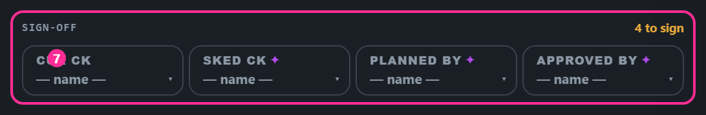
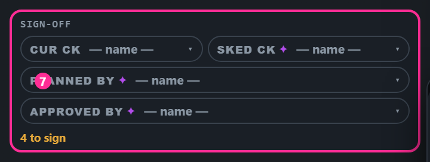
C2 and C8 · 149's home days, and amendment labels
C2. The 6's home days after the closing day showed them away; now they are free there, so 149's published home days go pending. Recommended: Close does not publish those; 149's scheduler plans and publishes them. The card names them (line 4).
C8. Sat 25 may already be on AL2 and Sun 26 on its first issue. Each day gets its own next label (AL3, AL1). Recommended: the card names no label, "an amendment published on each"; past 3 days it gives the range, "6 published days, 24–31 Jul". Other choice: each day with its label.
Q2 · A past detachment day found wrong later
Example. After Close, a mistake is found on 249's Wed 15 Jul. A closed detachment's schedules are kept, read only (D2103).
Recommended: "read only" means no new planning; a past day can still take a correcting amendment from its squadron's admins. Narrows D2103.
Other choice: nothing changes once closed.
F24 · Undo of Close
Example. Undo could take back Close's amendments, but by then 149 may have published the 6 at home for Fri 24 Jul. Undo would put them back on DET, and those home days go pending again.
Recommended: Close is not a step of the Undo button, as a posting is not (D350). "Keep open" on the card is its safety; the way back is a new detachment.
Other choice: Undo works until anything at home is planned on those days, then is greyed with the reason.
Planning each other's people
F19 · 149 picks a 142 man onto 142's published day (was Q3)
Example. 142 has published Tuesday. 149 picks Viper (142) for 14:00. Your D2107 makes 142's Tuesday "1 pending" at the pick, its four sign-offs fall, and 142 signs an amendment for something it did not plan; if 149 then drops Viper, 142's amendment says he went when he never did. Q3 moved this to 149's publish, but 142 still re-signs every time 149 publishes a change to him, so on a week of shared flying 142's amendment numbers stop meaning "142 changed its plan".
Recommended: 149's row is 149's published fact. It shows on 142's day the moment 149 publishes, with 149's grey badge, never pending on 142's day and never in 142's signature: the same as 142's own line in 149's wave already works (D2106). 142's schedulers get a bell line each time. A change 149 has not published shows faint beside it, so the row and the clash check always agree. This changes D2107.
Other choice: Q3 as worded: pending on 142's day each time 149 publishes.


F20 · The man picked is told
Example. 149 picks Viper (142) for Monday 13:00 and publishes. The bell rings 142's schedulers only. Viper has no access to 149's schedule; until 142 acts, his only schedule says he is free at 13:00.
Recommended: he always sees, read only, the other squadron's published line he is on, with no access given; and his own bell gets "149 planned you · Mon 13 Jul 13:00" when it is published or changed.


Q4 · 149 puts a 142 man in 149's own line: may 142 edit that line?
Example. 149 picks Saber (142) into the back seat of 149's VL. My earlier reading of D2114 ("a line concerns both when it holds men of both") would let 142 change VL's mission, times and 149's own crew.
Recommended: "concerns both" means only one squadron's own line inside the other's wave, like 142's RU in 149's wave. VL stays 149's alone; 142 sees Saber's "Attach · 149" row and any clash, and fixes it on its own lines or asks 149. Round 4's picture 7 is redrawn.
Other choice: 142 may also take its own man off 149's line, nothing else, with 149 told.


Q6 · Does that borrowing count him out on the Leave War?
Example. 149 picks Viper (142) for two hours of academics. His home schedule gets the automatic "Attach · 149" row. An Attach counts a man out on the Leave War today (D1374), so 142's Available drops and can raise the manning warning on someone's leave, though Viper is at work at home.
Recommended: the automatic row never counts him out. An Attach you file by hand (D2144) still does. Narrows D1374.
Other choice: it counts only when it covers his whole working day.
F8 · 142 changes its line in 149's wave after both have published
Example. Both Mondays published. 142 swaps RU's pilot, Viper for Tally. The change waits on 149's day; 142's day still reads ORIG and the grey line "Published by 149." 142 thinks it is out; only 149 can send it, and 149's scheduler has gone home. Monday morning Tally is not told. Your three sentences (D2124) cover three states; this is a fourth.
Recommended: a fourth sentence on both schedules, "RU changed · goes out when 149 publishes"; pending dots on the changed cells on 142's schedule; 149's schedulers' bell: "142 changed RU on Mon 13 Jul · publish to send it".
Other choice: 142 may publish an amendment holding only its own line in 149's wave.
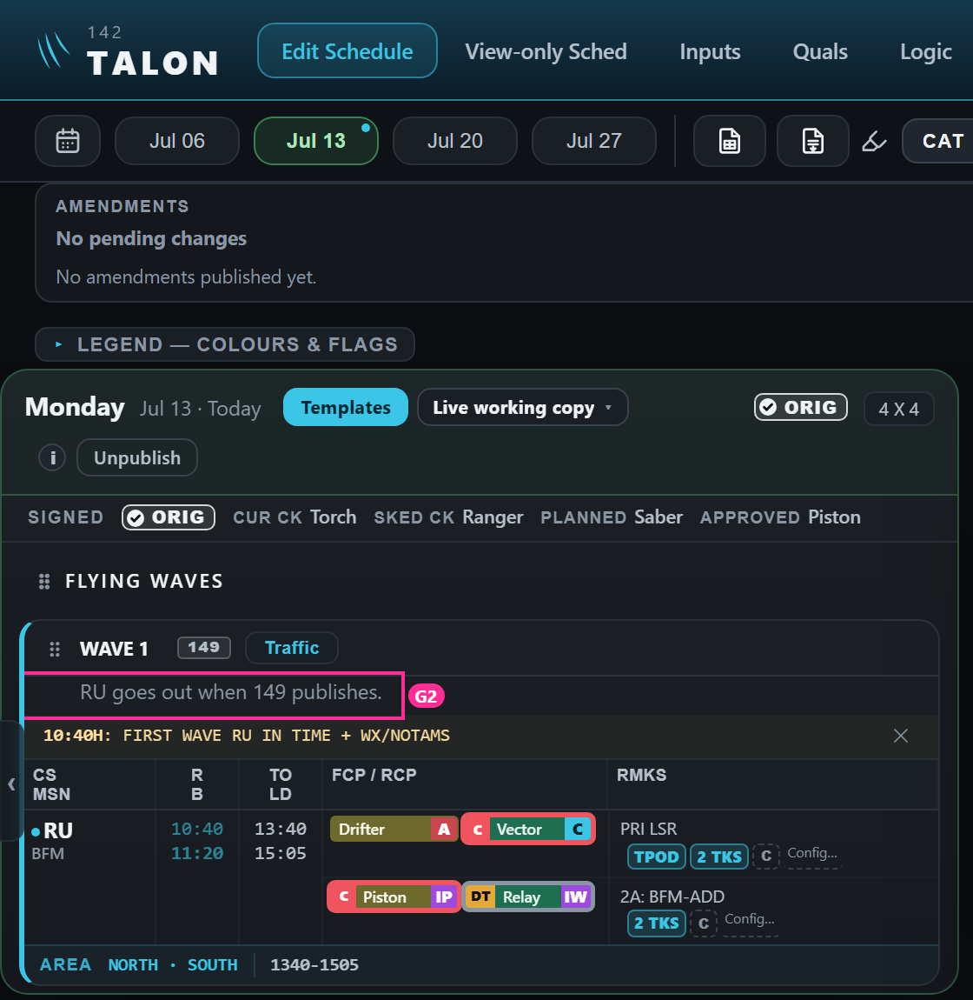
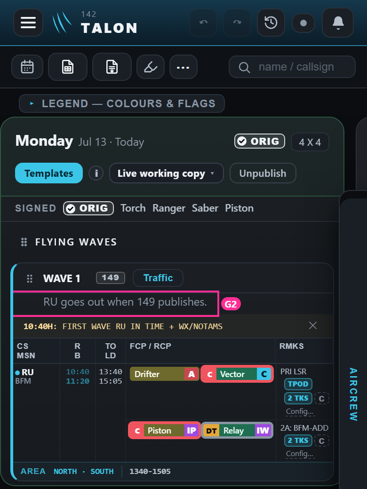
R9 · Two schedulers on one shared line (no lock, as you confirmed)
Example. 142's scheduler is changing RU in 149's wave and has emptied a seat; 149's scheduler presses Publish, and RU goes out with an empty seat.
Recommended: the "editing" mark shows across both squadrons ("Saber (142) – editing Tue"); nothing waits and nothing is refused; the later save stands, the person whose change it replaced is told by the bell, and the change history keeps both. 149's Publish card warns "Saber (142) is editing RU", and 149 may still publish.
Access and roles
Q5 · A 142 man given 149 "as a scheduler"
Example. An admin gives Hawk (142) access to 149 "as a scheduler" (D2094). A scheduler is always an admin (D785), so Hawk becomes 149's full admin: its crew rest, its leave approvals, its people, its detachments.
Recommended: two grants on Admin → Users. "Scheduler of 149" edits 149's schedule pages (Edit Schedule, the Scheduler Board) and nothing else of 149's. "Admin of 149" is everything, given only by a master admin or 149's own admins. Narrows D785 for the other squadron only; a security read when built.
Other choices: one grant, so "scheduler" means full admin; or "View" only for the other squadron (Fable's lean), since borrowing already lets a scheduler plan the other's men from his own schedule.


Transfer to Sqn
Settled: "Transfer to Sqn" on Post out names one of the app's squadrons (D2136). A transfer can be set months ahead, so the sheet's figures are today's, worked out again each time it opens, and on the date the app applies your choices to whatever stands then (D2147).
T1–T3 · Three choices on the sheet (your idea)
- T3 · In 149: Member or Admin, shown only to an admin of both squadrons. Anyone else sees no row: he joins 149 as a member and 149's admins decide. Otherwise a 142 admin could make a man an admin of 149 without 149 agreeing.
- T1 · 142 access: None, View or Scheduler, from the date. Recommended: None. What "Scheduler" means depends on Q5.
- T2 · 142 lines: "Keep him" (as a borrowed 149 man) or "Take him off" (seats left empty for 142's scheduler), applied on the date to whatever lines hold him then. Shown only when 142's lines after the date hold him today. Recommended: Keep him.
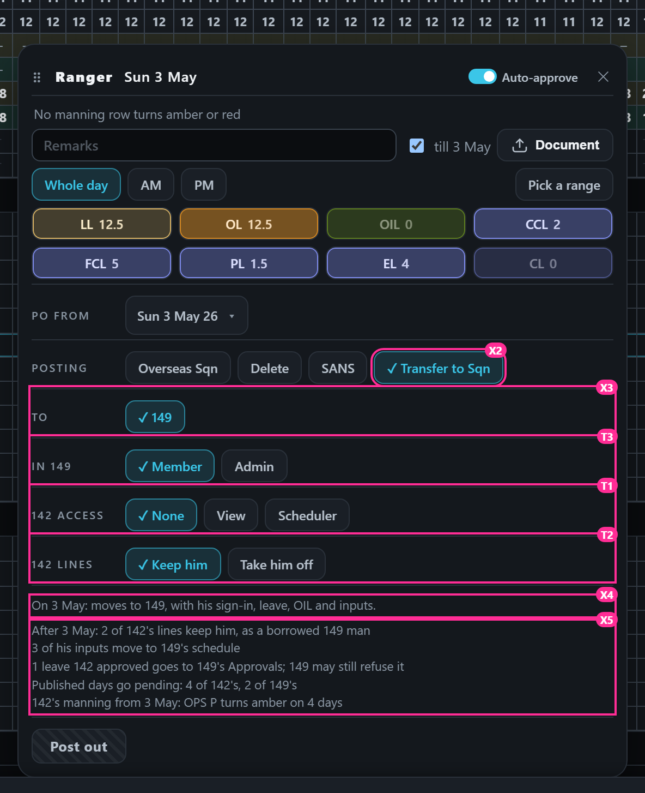
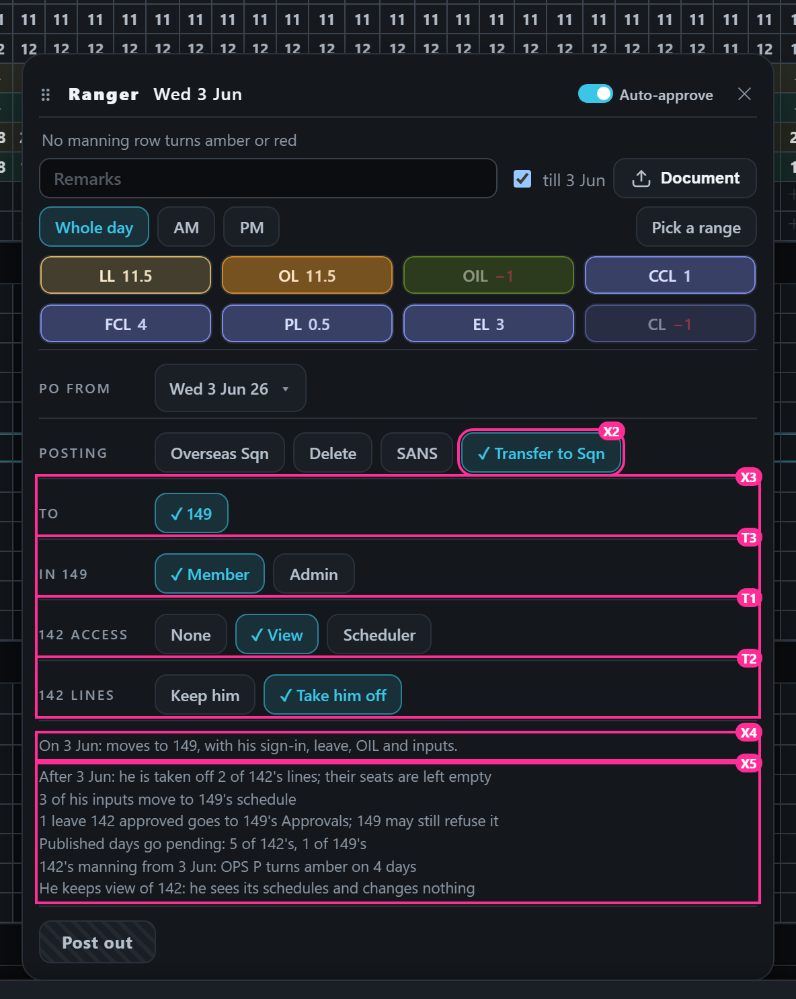
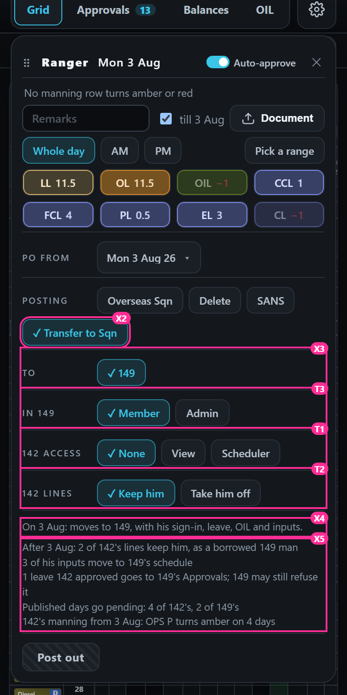
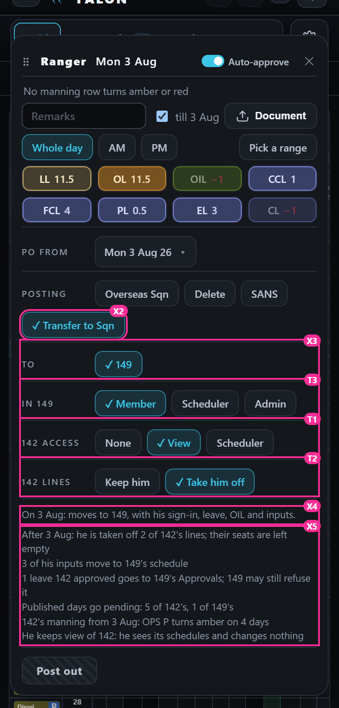
Q7 · The sheet's lines, and what he carries
The sheet's lines, as recommended (round 7 redraws them)
Today, each only when it applies (figures made up): after 3 Apr, 2 of 142's lines hold him · 3 of his inputs move to 149's schedule · 1 leave 142 approved goes to 149 · Published days go pending: 4 of 142's, 2 of 149's · 142's manning from 3 Apr: OPS P amber on 4 days · 2 quals 149 does not list are kept on his record · He stays on the B-course; 149 can open it
| Goes with him | His sign-in, callsign, inputs and medical records, currencies, leave balances, OIL and leave records. |
|---|---|
| Stays with 142 | Every 142 day already published with him on it, his months on 142's Leave War up to the date, the change history. |
| Refused | His own squadron; a date in the past (F13); a date inside an earlier posting (D328). Checked again on the date, the transfer waiting until the reason goes (as D306 does): a DET onto a 142 detachment across the date; leaving 142 with no admin. |
| Undo post out | Before the date, it cancels the posting. After it, no undo: the way back is a transfer from 149. |
On the date the bell reads "Ranger · Fri 3 Apr / Posted out · now with 149", to every admin of both squadrons, saying what the date did. Open for round 7: once a transfer is set, is a scheduler who plans him after the date told he moves to 149?
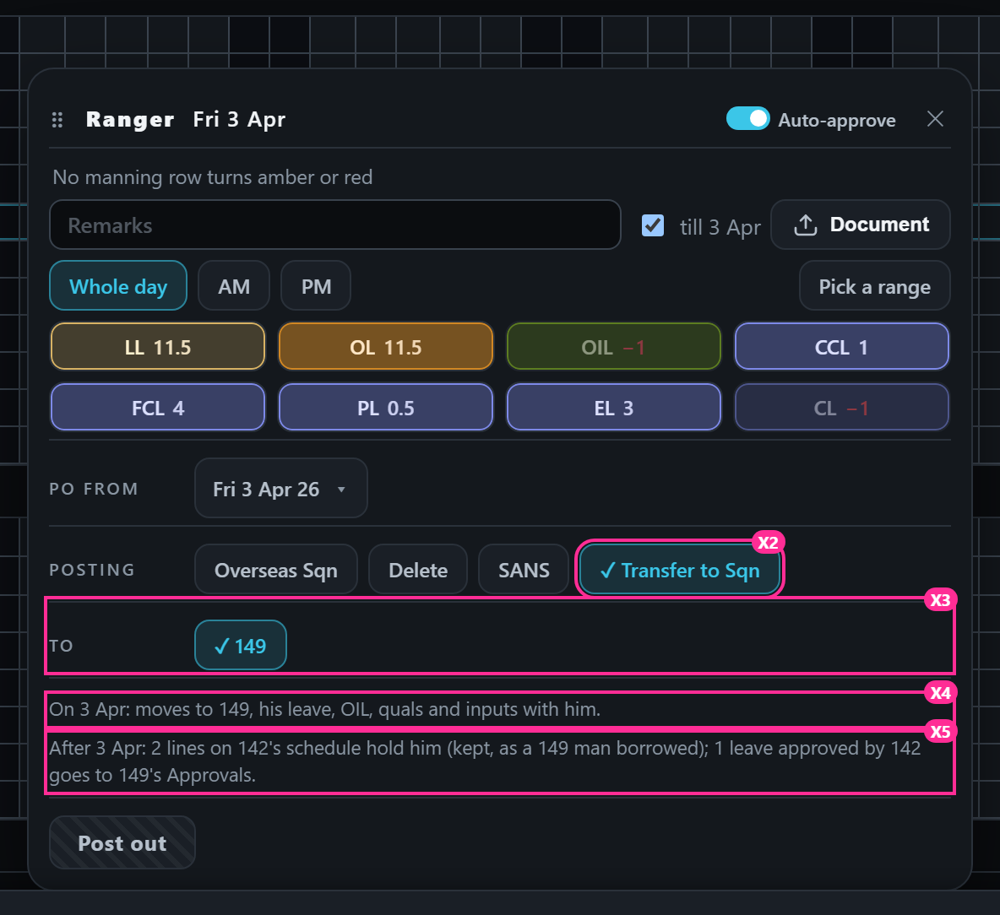
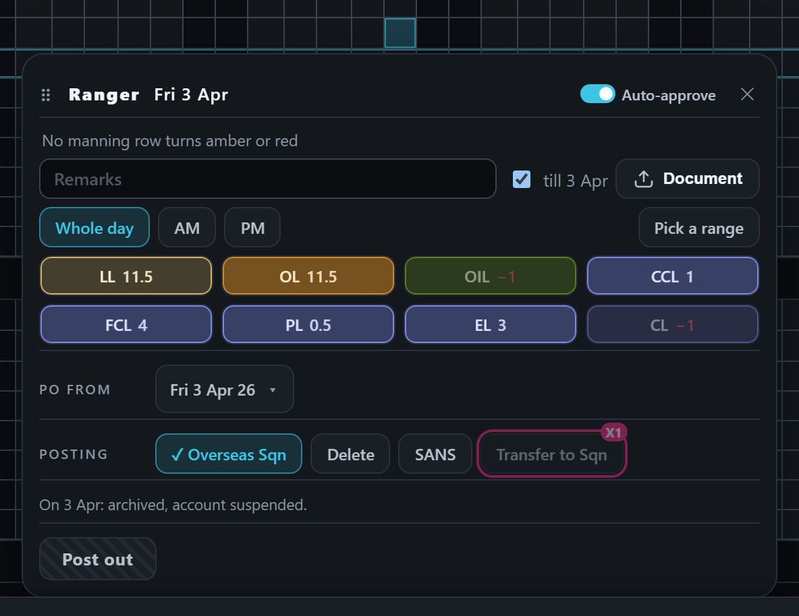
F13 · Whose man he is, day by day
Example. Rune transfers 142 → 149 on 1 Dec. If that is one setting that flips, every November day, published ones included, reads him as 149's man: "Attach · 142" rows appear on 149's past days, and his November OIL would be judged by 149's settings.
Recommended: read from his stints, as the Leave War keeps them: 142 to 30 Nov, 149 from 1 Dec. A transfer date in the past is refused. Every other posting outcome takes a past date today; this would be the first that does not.
F21 · His quals and Tracker course
Recommended: a qual mark under a column 149 does not list is kept on his record, greyed, never deleted. He stays on his Tracker course, which other students share; 149's instructors can open it. Other choice for quals: both squadrons share one list of qual columns. (Today there is one list; a list each is my reading of your D2132.)
F22 · Leave 142 approved
Recommended: it arrives approved and stays in his balance (D1541). 149's admins see it marked "approved by 142 before he joined" and can send it back from its day, as any approved leave. If 149 has no leave period for those dates yet, it waits on his record until one is made. Other choice: it arrives as a request again, and he is told.
OIL
Q1 · A day worked for both squadrons
Example. On a Saturday Saber (142) sits 142's Ops desk 08:00–10:00, then flies a 149 sim 10:30–12:00. Each squadron working out its own half pays him twice; one overwriting the other loses half.
Recommended: one span from both squadrons' latest published days, 08:00–12:00, one credit. Whether the day earns, and the full-day line, come from his own squadron's settings. If 149 amends him off, it is worked out again.
Other choice: each squadron pays its own part. Simpler; pays twice on short days.
F23 · The other squadron changes its Logic later
Example. Rune (149's) is on a 142 line on Sat 10 Apr; 142 publishes. By Q1 his OIL uses 149's full-day value. Later 149's admin changes that value. Today a published day whose values changed reads "OIL on this day · Logic values changed" and its sign-offs fall, so 142's day would go pending for a change made in 149's Logic.
Recommended: a published day keeps the values it went out with for every man on it; the other squadron's change applies from that day's next publication only. Other choice: it reaches back and reads pending.
F1 · Public holidays
Example. 142's admin has typed a public holiday; 149's has not. A 142 man on 149's line that day earns nothing for his holiday.
Recommended: one holiday list for squadrons at one place, typed once by either admin; each squadron's "Off day" stays its own; a detachment uses home's holidays and weekends. Other choice: each keeps its own list, as today.
Detachments, other
F12 · Whose "today" overseas
Example. 249 is some hours behind home. Close is pressed at 07:00 home time on 22 Jul; there it is still 21 Jul and the last wave is airborne. The app takes "today" from each person's own phone, so two people get two answers to "days after today".
Recommended: every date turn (Close, a planned end, a posting, the late mark) goes by home's date; a detachment's schedule is typed in its local times, shown as typed. Other choice: a clock per place for everything; much more to build.
F4 · May a home scheduler Reject a man's DET?
Example. Anvil is on 249's published 15–21 Jul. At home 149's scheduler presses Reject on his DET row, as he may on an overseas duty today. Anvil is free at home and planned at two places.
Recommended: no Reject on a DET at home; the way off is the detachment's People list or the DET's dates, and either one that leaves him seated there shows R4's warning. Other choice: Reject stays, with R4's warning.
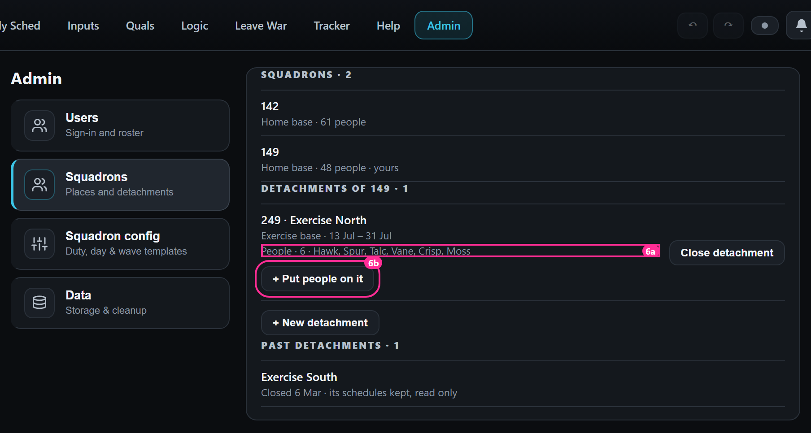

Only if you disagree: I design these as written
- R4 · One man, one place, checked afterwards too. A red warning on any line holding a man not at its place, pending on a published day; a place move, Close and a transfer each list what they break before saving.
- R5 · Crew rest, days in a row and the long day follow the man across places, a travel day ending his DET's last day at 24:00 unless the schedule shows less. "Different places are never checked" stays for people, areas and sims on one day. Narrows D2092.
- R6 · A detachment's ALL AVAIL counts the men on it; each home ALL AVAIL counts its own men at home.
- R7 · A squadron's place keeps its history. A move counts from the next day's start (no day split) and lists what it strands: "9 days after today hold lines shared with 142".
- R8 · Whose settings judge a man's day. Crew rest by the schedule of his first flying line; if he flies on both that day, the stricter. Days in a row, the long day and Insights' hours by his own squadron's.
- R10 · The Tracker gets a squadron per course. No sortie reaches the Tracker by itself today; whether it should is for the Tracker expansion.


Later rounds (nothing to answer now)
- Which detachments a DET may name: his own squadron's (recommended) or both squadrons'.
- Two DETs over the same days, or one outside its detachment's dates: refused. A DET is whole days only.
- A man on a detachment sees its schedule by himself, for its dates.
- A detachment's Logic, areas, sims, duty desks and jets start as a copy of its squadron's.
- A detachment at its own squadron's place: refused.
- DET on the Leave War: its mark, whether count rows include it, whether a late DET reads LATE.
- Whose late cut-off judges a borrowed man's input, and a borrowed SANS man's: his own squadron's.
- The other squadron's scheduler sees when a man is unavailable, not why.
- Print and export show only what is issued. The other squadron's lines take no line numbers.
- A detachment's number may not equal a squadron's or another open one's.
- Insights for a borrowed man, and a detachment's lines in its squadron's totals.
- Undo of a place move; "✕ Wave" then Undo.
- A primary squadron chosen wrongly at sign-up; the master admin as a new squadron's first admin.
- A hand-filed Attach naming one of the app's squadrons: warn and point to borrowing.
Settled since round 6 went out
- Close (D2142): one press clears the published days after today and publishes on each. Your "A".
- The Attach input (D2144): stays, filed by hand for staff work; the automatic "Attach · 149" row is never an input.
- SANS (D2145): each squadron's SANS men may be borrowed by the other.
- DET (D2146): a man goes on a detachment by a DET input and still counts as manpower; OD stays for staff trips. This settled R2 and R3.
- The transfer sheet (D2147): its figures are today's; the date acts on what stands then.
- Replaced by this page: C1 by F18, C3 by F15, C5 by F19, C6 by T1, R1 and R11 by your answers, R9 by its no-lock version.
- Readers' claims checked and dropped: that refusing an approved leave needs the war stepped back (wrong since D1177); that a transferred man's past lines change badge and count; that each squadron edits its own qual columns today; holding 149's Publish while 142 edits (a lock, against D1751).
The earlier version of this page, and Fable's own page, are kept in the project.